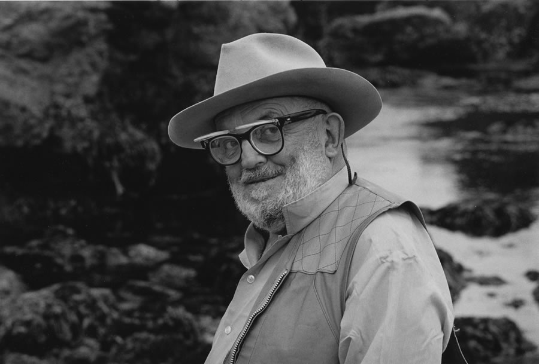

Энсел Истон Адамс
(англ. Ansel Easton Adams; 20 февраля 1902 — 22 апреля 1984) —
американский фотограф, наиболее известный своими
чёрно-белыми снимками американского Запада.

Энсел Истон Адамс
Также Адамс является автором ряда книг, включая трилогию «Камера»,
«Негатив», «Отпечаток» (англ. The Camera, The Negative, The Print),
и одним из основателей фотографической группы f/64. Один из
важнейших представителей фотографии Нового ви́дения.

Энсел Истон Адамс
Кроме того, Адамс вместе с Фредом Арчером, создал зонную
систему, позволяющую фотографам улучшить контроль
за качеством готового негатива.